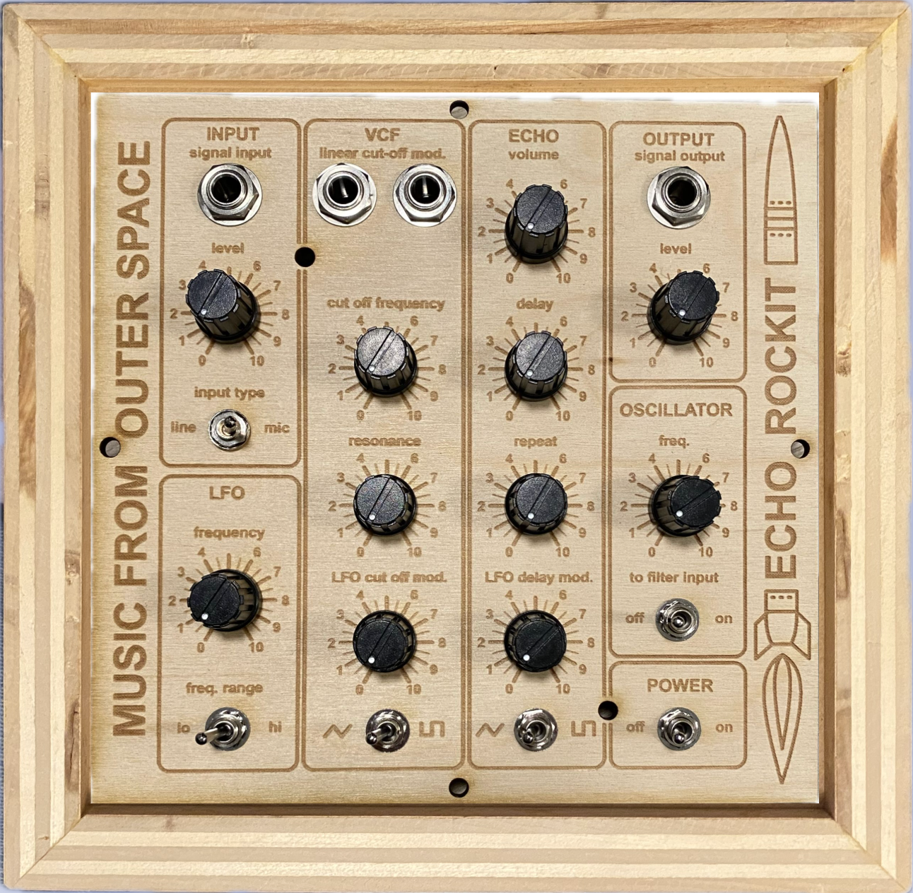

Hi! I'm Adriana.
- I study ECE and Robotics at Carnegie Mellon University.
- I am passionate about machine learning, integrated circuit design, computer architecture, embedded systems, robotics, and biotechnology.
- I love research! I have worked in the CMU Micro Robotics Lab, where I lead an independent project designing autonomous fish-like robots from the ground up. Recently, I have been working on building a methodology for circumlunar path planning with CMU Professor and Astrobotic founder Red Whittaker.
- This past summer, I worked at Draper Laboratories as an Undergraduate Systems Engineer. Here, I learned what is really inside an inertial measurement unit, how to contribute to a large codebase, and what goes into verifying critical hardware.
- This spring, I am studying at EPFL! I am super excited!
- I designed this website from scratch using HTML and CSS.
- Learn more about me: Resume.
Research

Circumlunar Path Planning for CircumNav Rover
- Worked in team of 3 to compute and optimize circumpolar paths using crater data in Python in CMU graduate course Space Robotics Development.
- Working with peers and Professor Red Whittaker to publish findings.
Caudal Fin Actuator for Autonomous Fish-like Robots
- Independent project as an undergraduate researcher in the CMU Micro Robotics Lab, building a tail actuator for underwater autonomous coordinated fish-like robots with inertia-based turning capability
- Utilized CAD (SolidWorks, Onshape), rapid prototyping, circuit design, and MATLAB data processing
- Worked with Professor Sarah Bergbreiter and mentor Terri Kent
- Click the link above to learn more!
Selected Projects

GPS Real Time Kinematics Data Collection
- Carnegie Involvement Association, familiarly known as CIA Buggy, is a student organization at CMU. We participate in one of CMU's annual traditions: racing our buggies (carbon fiber gravity racers) against 10+ teams during Raceday, with the help of our mechanics, drivers, pushers, build, and data. I lead CIA data efforts as Data Chair for Raceday 2025 and continue to help with data analysis projects.
- Pictured: Mechanical housing that I redesigned and manufactured to promote user friendliness.

SuperSynth: Analog Audio Synthesizer
- Built synthesizer in team of 2 for Build18 Hardware Hackathon. This project was selected for an Innov18 presentation to a collection of Build18 corporate sponsors. Presentation: SuperSynth.
- Build18 is CMU's largest Hardware Hackathon. After building this project, I was selected as a Web Development and Media Design Officer for Build18 2026!
Contact me
Want to get in touch? Curious to learn more about any of my projects? Interested in collaborating on something new? Please feel free to leave me a note! My email address is adrianah@andrew.cmu.edu.